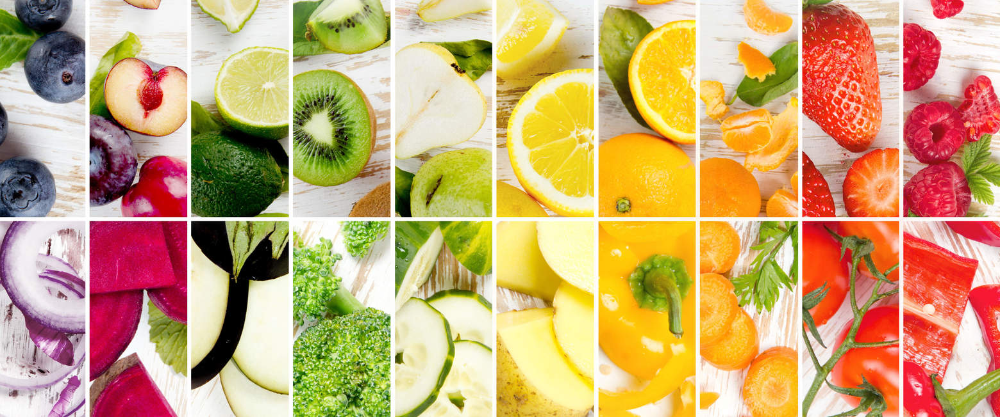
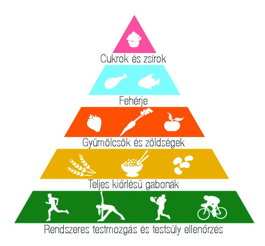

Miért fontosak a zöldségek és a gyümölcsök?
A zöldségek és gyümölcsök rendkívül fontos vitamin- és ásványianyag források, amelyek mind-mind szerepet játszanak a szabadgyökök megkötésében, a szervek egészségének megóvásában és az immunrendszer megfelelő működésében.
A táplákozási piramisról
Napi energiabevitelünket alapvetően a szükségletnek kell meghatároznia. Nagyobb fizikai, szellemi igénybevétel esetén több táplálékot kell fogyasztanunk, hogy az erőnlétünket, testsúlyunkat az adott szinten tudjuk tartani.
Az étkezésünket leginkább meghatározó élelmiszercsoport a piramis alján található. Szükségletünk felét-egyharmadát fedezik a kenyér-, péksütemény-, tészta- és gabonafélék, burgonya, rizs, hüvelyesek (borsó, bab). Energiaigényünk legnagyobb részét keményítő bontásából nyerjük. Jó, ha a választott kenyérfélék lehetőleg teljes kiőrlésű lisztből készüljenek. Így értékes élelmi rostot és B vitaminokat is juttatunk a szervezetbe, és lényeges, hogy az ilyen alapanyagból készült termékek lényegesen laktatóbbak, mint a fehérkenyér.
A zöldség- és főzelékfélék szintén fontos szerepet játszanak táplálkozásunkban. Energiatartalmuk nem olyan jelentős, mint az előző csoporté, inkább ásványianyag-, élelmirost- és vitamintartalma előnyös. Naponta legalább háromszor jó lenne fogyasztanunk nyersen és főtt formában is. Gyümölcsöket értékes gyümölcscukor-, vitamin-, és rosttartalmuk miatt fogyasztunk. Nyári hónapokban a mindennapjainkhoz tartoznak, de télen is fontos, hogy legalább naponta illesszünk az étkezésünkbe gyümölcsöt.
Tej, tejtermékek (sajtok, túró, kefir, joghurt) nem csak a gyerekeknek elengedhetetlen. Fehérje-, és ásványianyag tartalmuk jelentős. Gondoljunk a magas kálcium tartalmukra! Naponta többször fogyasszunk.
A húsok (baromfi, sertés, marha, hal), felvágottak, tojás talán a legfontosabb fehérjeforrásaink. A főétkezéseink - reggeli, ebéd, vacsora - mindig tartalmazzanak teljes értékű fehérjét tejtermékből, tojásból vagy húsféléből.
A zsiradékok nem képeznek önálló élelmiszercsoportot táplálkozásunkban. Az élelmiszereink természetes módon tartalmaznak zsiradékot, de tisztában kell lennünk avval, hogy a sovány húsok lényegesen értékesebbek. Nem szükséges, hogy teljesen száműzzük az étkezésünkből a zsiradékokat, hiszen ez a legmagasabb energiatartalmú élelmianyag csoport, és a zsírban oldódó vitaminok felszívódása, felhasználása miatt is fontosak.
Az édességek fogyasztása az egészséges szervezetű emberek számára szintén része a táplálkozásnak. Közkedvelt kiegészítői egy teljes értékű étkezésnek.
Nagyon fontos, hogy az ételek mellett odafigyeljünk a megfelelő folyadékbevitelre is! Felnőttek számára a napi összes folyadék mennyisége 11 l körül fedezi a szervezet igényeit - beleszámítva az elfogyasztott levest, tejet, stb. is -, de nyári hónapokban magasabb a szükségletünk.(Forrás:sulinet.hu)
5 ok, amiért fontos a zöldség- és gyümölcsfogyasztás
- A zöldségek és gyümölcsök kiemelkedő táplálkozás- élettani szerepet töltenek be szervezetünk megfelelő működésében. Viszonylag alacsony energia-, zsír-, és szénhidráttartalmukkal szemben jelentős vitamin, ásványi anyag és antioxidáns tartalmuk révén szerepet játszanak számos betegség kockázatának csökkentésében.
- Kedvezően hatnak a szervezet sav-bázis egyensúlyának fenntartására.
- Magas élelmi rosttartalmuk elősegíti a megfelelő bélműködést, teltségérzetet biztosít és jótékonyan befolyásolja szervezetünk zsír-és szénhidrát anyagcseréjét.
- Íz és illatanyagaik révén serkentik az emésztőnedvek termelését, ezáltal hozzájárulnak az emésztőrendszer megfelelő működéséhez.
- Magas víztartalmuknak köszönhetően szabályozzák a szervezet folyadékháztartásának egyensúlyát.